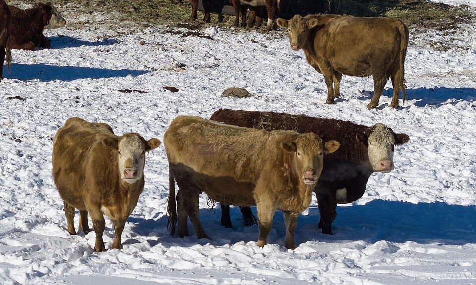
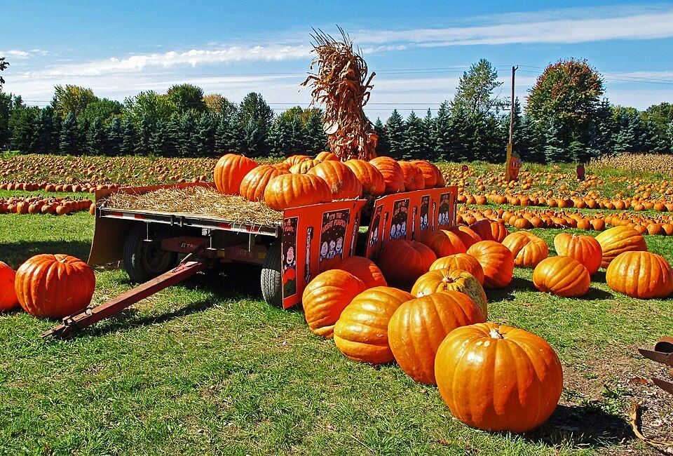

Beef and pork by the share Long Fence Farm Shop cards, a freezer calculator, and card, cash, check or Venmo. See the beef farm U-pick berries and CSA
Wild Plum Farm
A daily picking report, "text me when it's ready," and CSA signups.
See the berry farm
U-pick berries and CSA
Wild Plum Farm
A daily picking report, "text me when it's ready," and CSA signups.
See the berry farm

Pumpkin patch and parties Crooked Gourd Farm A live "open now" sign, an admission counter and party booking. See the pumpkin patchDairy, flowers, Christmas trees?
If your farm sells something else, I can mock up a sample for your kind of farm.
Your farm, online, your way.
Email me about your farm and we will find a plan that fits your budget. Payment plans and trades welcome.